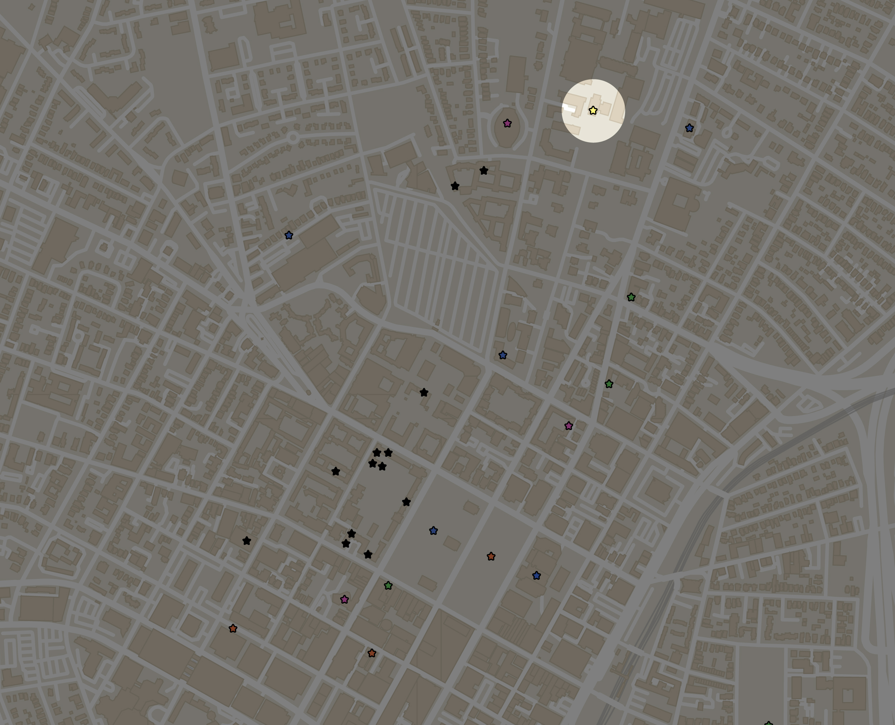

“Next time we hang out, can it be in a new place?”
“Why?” I asked.
“When you continuously create memories in a single space, they all blend together, and it's difficult to remember what happened or when they happened.
I don't remember when or where we had this conversation.
Part 2: Blurred Memory
What does it mean to remember a moment?
Can you replay it in your head? Associate it with a sound or smell? Remember where and when it was?
Take my first-year dorm as an example - Lanman-Wright A51.
I remember hosting Moe's birthday party, one week after my room's hangout on MLK day accidentally turned into a full blown house party that lasted hours. Or was the birthday party before? I remember late-night wine-driven conversations with Michelle and Mel under the red LED strip lights that I loved so much. Or was it with someone else? They were definitely there, but which time?
While always stopping in C22 to drop off packages,
or F11, before going up to my dorm,
(for the sake of not having to walk up five flights of stairs)
or walking across the hall to B51 every night,
so many memories were created, photos taken, songs listened to - but it's all the same to me now.
Countless nights spent at friends’ places, countless Mario Kart games played, gibberish said, memories made.
Places around campus, taking up space in my mind.
And yet, I can't remember them unless I look at the timestamp in my camera roll.
On the contrary, some locations are deeply ingrained in my head.
Memory, of course, is not just limited to houses and dorm buildings.
Repeated interactions and daily routines have faded into the background.
Some memories linger, and themes emerge as memory is tied into place.
Places for first times,
Places where fun moments happened,
and got written over,
Places where something meaningful occured,
And of course, food-related times.
As I go through my life, different spots on the map are embedded with my most salient memories.
Part 3: The Tower
In January of 2025, a few weeks after meeting through a mutual friend's winter break Minecraft server (the infamous two-week phase), Krish and I gave each other our hometowns late at night in a classroom on the sixth floor of Kline Tower.

Maps, timelines, word webs, and diagrams were drawn on all eight chalkboards of the room as we told our life stories in depth for six hours each.
This must be what he was talking about when he said we should create memories in new places. The reason I hold this memory so dearly in my heart is because of the new conditions it was created in and the untouched state it will stay in..
When you spend four years of your life almost entirely contained within the same few blocks and buildings, the memories pile up and turn into a blur.
The days blend together.
You leave little pieces of your life all around you. In the end, it's those one-off moments in new and far away places that are most salient in your mind.
While Kline Tower is riddled with memories of math classes, waiting in the line at the cafe, and my trek up to Russian every morning, the 6th floor will always belong to Krish and I.
Wow! One of your friends must be in Aaron Reiss's "Telling Stories With Maps" class — how cool!
Sadly, this site is meant to be viewed on a computer, so if you are on a phone or tablet then it's gonna look all kinds of wonky and you might get the wrong impression about how amazing this work is.